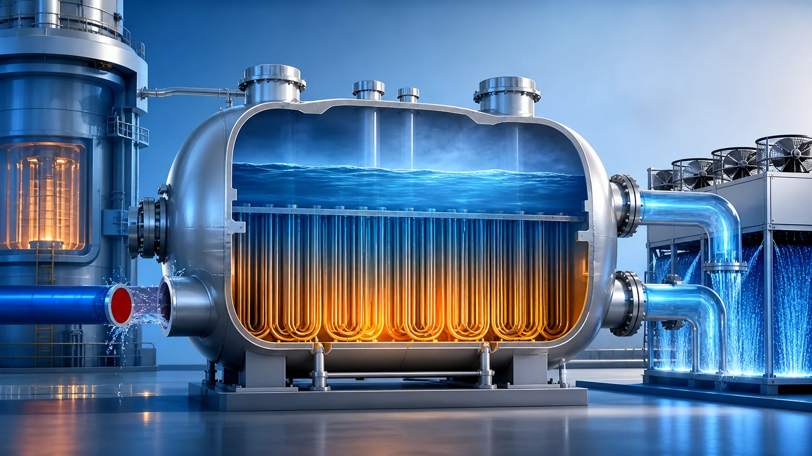
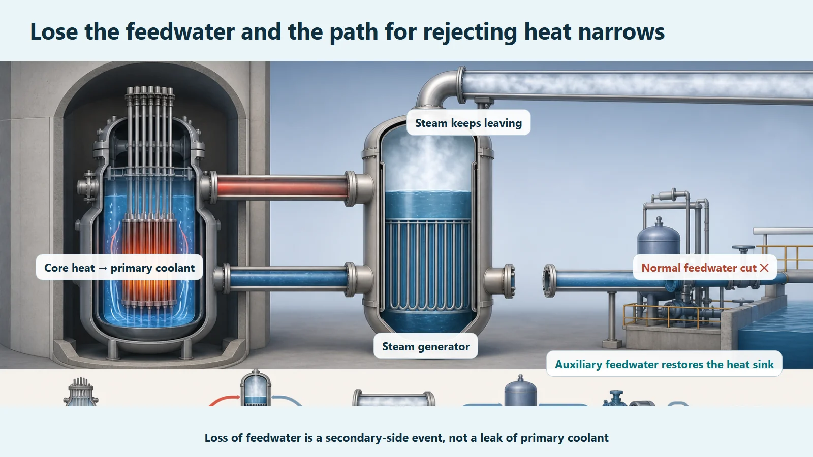
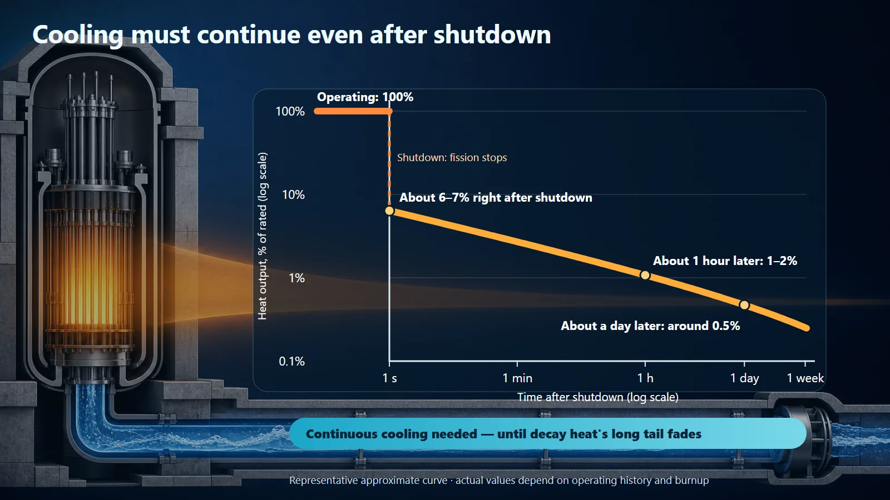

Safety Principles & Accident Analysis · 210
Like a Reservoir Whose River Runs Dry — The Loss of Feedwater Accident
Steam generators keep boiling their water away. Cut off the feedwater and the reactor's main path for rejecting heat starts to close, even after shutdown.

A loss of feedwater accident is an event in which the water feeding a pressurized water reactor's steam generators is cut off, threatening the main path for rejecting the reactor's heat. Because decay heat remains after shutdown, starting at roughly 6–7% of rated power, the plant trips the reactor automatically and starts independent auxiliary feedwater to keep that path open.
A reservoir does not dry up overnight
Have you ever seen a photo of a reservoir dried down to its bed? Cracked mud and a pale ring on the banks where the water used to lap: a regular image in drought news. But a reservoir doesn't dry up overnight. As long as the river flowing in and the water evaporating away in the sun roughly balance each other, it stays full. The moment the incoming river is cut off, the level quietly starts heading for the bottom.
A nuclear power plant has exactly this kind of "reservoir" inside it. The loss of feedwater accident is the event in which the waterway feeding that reservoir is cut off.
The reservoir next to the reactor: the steam generator
A pressurized water reactor has large components called steam generators. Water heated in the core (the primary coolant) flows through thin tubes inside them and brings the other water filling the space outside the tubes (the secondary-side water) to a rolling boil. The resulting steam spins the turbine and makes electricity. One fact to hold on to: the steam generator's water keeps leaving as steam, the way a reservoir loses water to the sun. So someone has to keep refilling it as fast as it goes, or the level falls. In normal operation, the waterway that does this job is the feedwater (normal feedwater).
But the steam generator is not just a device for making electricity. It is also the window through which the heat the reactor makes is thrown away, effectively the one big door the heat leaves through. As the secondary-side water absorbs heat and leaves as steam, it carries the core's heat out with it. For that door to work, there must always be water inside the steam generator.
When the waterway is cut: the loss of feedwater accident
Now the river is cut off. What happens if the system that pushes feedwater in malfunctions, or the feedwater pumps stop? The steam generator's water still leaves as steam but is not replaced, so, just like the reservoir, its level quietly begins to fall. This event, the loss of the feedwater flowing into the steam generators, is the loss of feedwater accident.
What if nothing were done? If the steam generator dried up the way the reservoir exposes its bed, the big door the heat leaves through would close. With nowhere for the heat coming from the core to go, the temperature and pressure of the primary system would creep upward. So this is not a matter of "the water's a bit low." It is a fairly fundamental event, one that threatens the reactor's path for getting rid of heat.

Unfortunately, the heat remains even after shutdown
"Then just stop the reactor," you might think. Unfortunately, that isn't enough. Fission can be stopped in an instant by inserting the control rods, but the heat given off by radioactive materials that built up in the core as they decay on their own, so-called decay heat (residual heat), does not switch off like a light.
It's like the reservoir again: cutting off the river doesn't make the sun any weaker. Right after shutdown, heat amounting to several percent of rated power (roughly 6–7%) keeps coming, and it only fades gradually, to roughly 1–2% after about an hour and around 0.5% after about a day, so cooling has to continue for a long time. (These are representative values from a standard approximate curve; the exact values depend on operating history and burnup.)

| Time after shutdown | Decay heat (approx., % of rated power) |
|---|---|
| Right after shutdown | about 6–7% |
| About 1 hour | about 1–2% |
| About 1 day | around 0.5% |
That is why a loss of feedwater is not a light matter. Even after shutdown there is still cooling to do, and cooling requires a path for getting rid of heat, which means water in the steam generators.
Awkwardly, the water often gets cut off at the same time
There is a further complication. The very event that stops the reactor often stops the feedwater too. If the external power supplying the plant is lost, the large feedwater pumps that run on that power stop with it, and a sudden turbine stop can also cut off feedwater. The tap is turned off at exactly the moment water is needed most.
So a nuclear plant does not rely on normal feedwater alone. It adds a separate backup water supply that works completely independently of normal feedwater: the auxiliary feedwater system. When a loss of feedwater is detected, the reactor shuts down automatically, dropping its heat output to decay-heat levels, and auxiliary feedwater starts up on its own, putting emergency water into the steam generators and restoring the path for heat to leave. It doesn't wait for a person to press a button.
An easily confused neighbor: the loss-of-coolant accident
There is one accident whose name is often confused with this one: the loss-of-coolant accident (LOCA). Both are stories about "not enough water," so it's easy to think they're the same, but the side that runs short is completely different. In a loss of feedwater, the secondary-side water fed into the steam generators is cut off, while the primary coolant itself keeps circulating normally. In a loss-of-coolant accident, the primary coolant that directly cools the reactor leaks out of the system. A waterway into the reservoir being cut off versus a hole in the big tank holding the reactor: entirely different situations, handled by different systems. (How loss-of-feedwater events are subdivided and the acceptance criteria applied to them differ by reactor type, regulatory system and plant, so no specific categories or values are quoted here.)
So what does this accident tell us?
This accident says neither "nuclear plants are dangerous" nor "nuclear plants are invincible." It is closer to a key that shows why nuclear plants are designed and operated the way they are. Getting rid of heat is a fundamental safety function of a reactor, and a loss of feedwater is the classic event that tests that function head-on. So plants assume in advance that it could happen someday, automate the shutdown signals, layer in independent backup feedwater, and analyze the accident beforehand, so that if one layer is breached, the next one holds.
Key takeaways
- The steam generator is the reactor's big window for throwing away heat; because its secondary-side water keeps leaving as steam, feedwater must keep replacing it.
- A loss of feedwater accident is when that feedwater (the river) is cut off, the steam generator level falls, and, if nothing were done, the path for getting rid of heat would be threatened.
- Even after the reactor stops, decay heat remains for a long time (the sun doesn't weaken right away), so a path for getting rid of heat is still needed after shutdown.
- The event that stops the reactor often cuts off feedwater too, so plants combine automatic shutdown with independent auxiliary feedwater.
- A loss of feedwater (secondary-side feedwater cut off) and a loss-of-coolant accident (primary coolant leaking) run short of water on different sides; they are entirely separate accidents.
Just as one photo of a dried-up reservoir shows that water isn't simply there but is a balance constantly refilled, the loss of feedwater accident shows why nuclear plants guard their path for rejecting heat in so many layers.